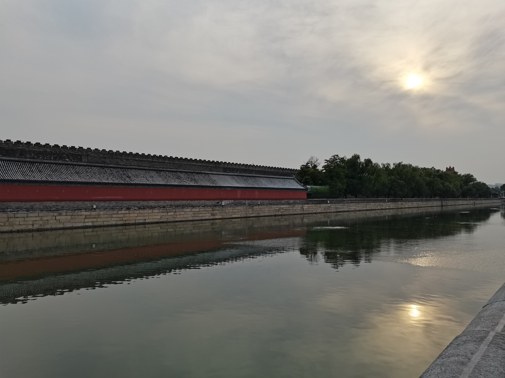
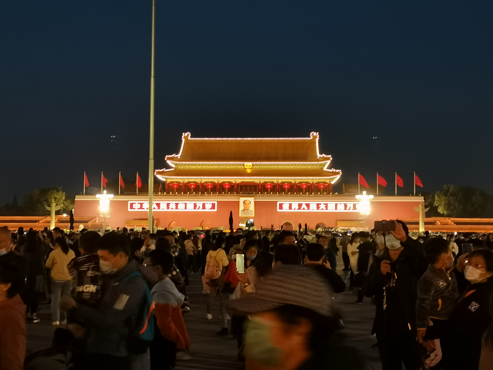

陈丽红 Lihong Chen
福建省漳州市 处女座
目前的模样
现在就读于北京大学医学部，是众多医学预科学子的一员，参加了广播台等学生社团。
就学经历
小学曾就读于胜利小学、芳林小学
中学
初中就读于漳浦龙成中学
高中就读于福建省漳浦第一中学
大学本科就读于北京大学医学部药学院
北京大学
北京大学医学部
北京大学药学院
我目前的学习状态
just so so
普通化学B
普通生物学A
a little
计算概论B
TED英语演讲
nothing
高等数学C
思修
天安门
之旅
one
快17公里、一个多小时的的骑行

two
看降旗、大花篮

ps
delicious 老北京酸奶